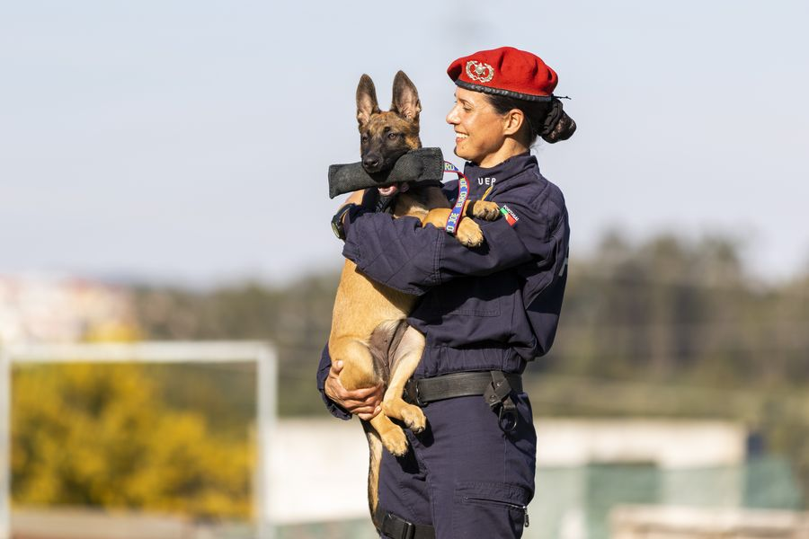
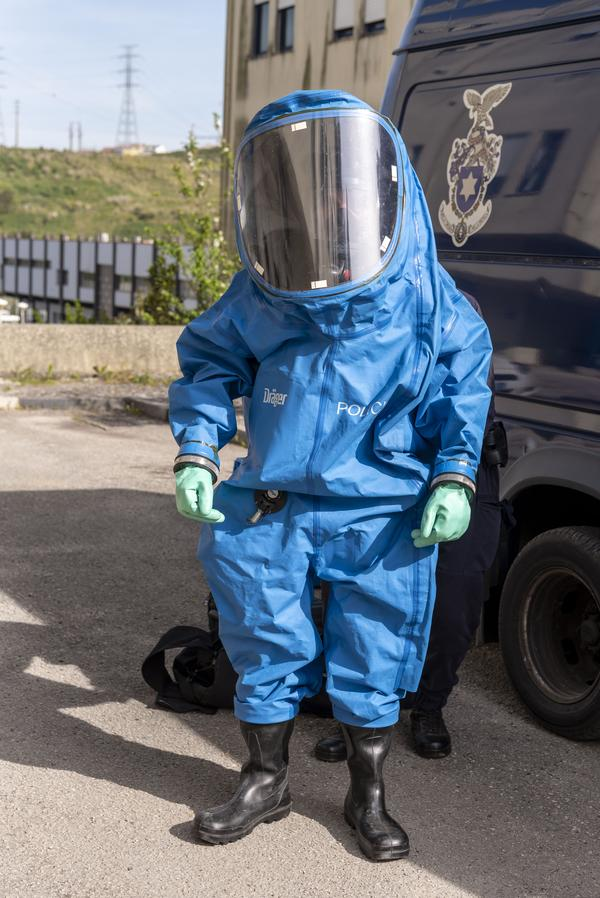
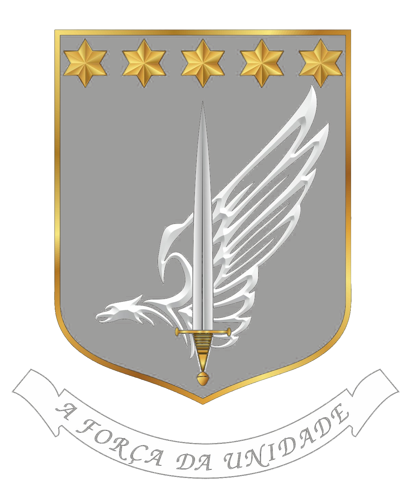
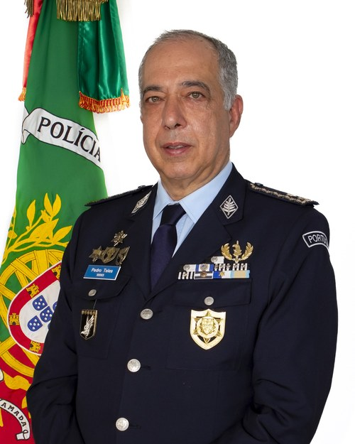

Arquivo fotográfico
Galeria
Momentos que definem a nossa história.






A Unidade Especial de Polícia (UEP) é a unidade da Polícia de Segurança Pública especialmente vocacionada para operações de manutenção e restabelecimento da ordem pública, resolução e gestão de incidentes críticos, intervenção táctica em situações de violência concertada, segurança de instalações sensíveis e inactivação de explosivos e segurança em subsolo. (Lei n.º 53/2007, de 31 de Agosto)
Criada a 5 de Maio de 2008, a UEP afirmou-se ao longo de 18 anos como a força de reserva nacional da PSP, respondendo aos mais exigentes cenários operacionais com profissionalismo, rigor e determinação. O seu lema, A Força da Unidade, resume o espírito que une todos os que vestem esta farda.
Lei n.º 53/2007, de 31 de Agosto · Art.º 40.º
A Unidade Especial de Polícia é uma unidade especialmente vocacionada para operações de manutenção e restabelecimento da ordem pública, resolução e gestão de incidentes críticos, intervenção táctica em situações de violência concertada e de elevada perigosidade, complexidade e risco, segurança de instalações sensíveis e de grandes eventos, segurança pessoal dos membros dos órgãos de soberania e de altas entidades, inactivação de explosivos e segurança em subsolo e aprontamento e projecção de forças para missões internacionais.

>>>"Dezoito anos de história são o reflexo de uma Unidade que nunca recuou perante o dever. A cada missão cumprida, a cada operação concluída, reafirmamos o nosso compromisso com a segurança dos cidadãos e com a excelência que Portugal merece. A Força da Unidade está nas suas mulheres e nos seus homens — hoje como sempre."
— Superintendente-Chefe Pedro Teles
O Corpo de Intervenção é a força de reserva da PSP, vocacionada para a manutenção e restabelecimento da ordem pública, protecção de instalações e apoio a órgãos de segurança policial em todo o território nacional.
Fundação: 25 de Novembro de 1975O Corpo de Intervenção constitui uma força de reserva à ordem do director nacional, especialmente preparada e destinada a ser utilizada em acções de manutenção e reposição de ordem pública, combate a situações de violência concertada e colaboração com os comandos no patrulhamento.
Criado em 24 de Dezembro de 1979, o GOE é a força de intervenção táctica da PSP, destinada a combater situações de violência declarada cuja resolução ultrapasse os meios normais de actuação.
Fundação: 24 de Dezembro de 1979O Grupo de Operações Especiais constitui uma força de reserva da PSP, à ordem do director nacional, destinada, fundamentalmente, a combater situações de violência declarada, cuja resolução ultrapasse os meios normais de actuação.
O Corpo de Segurança Pessoal, criado em 29 de Dezembro de 1994, é especializado na protecção pessoal de altas entidades nacionais e internacionais e membros dos órgãos de soberania do Estado.
Fundação: 29 de Dezembro de 1994O Corpo de Segurança Pessoal é uma força especialmente preparada e vocacionada para a segurança pessoal de altas entidades, membros de órgãos de soberania, protecção policial de testemunhas ou outros cidadãos sujeitos a ameaça, no âmbito das atribuições da PSP.
Criado em 19 de Janeiro de 2000, o CIEXSS é a subunidade especializada na detecção e inactivação de engenhos explosivos, segurança em subsolo, resposta NRBQ e formação técnica nesta área.
Fundação: 19 de Janeiro de 2000O Centro de Inactivação de Explosivos e Segurança em Subsolo é um núcleo de direcção e formação técnica da especialidade de detecção e inactivação de engenhos explosivos e de segurança no subsolo.
O Grupo Operacional Cinotécnico, criado em 31 de Agosto de 2007, é a subunidade especializada na aplicação de binómios canídeos no quadro das competências da PSP, em apoio às restantes subunidades e missões nacionais e internacionais.
Fundação: 31 de Agosto de 2007O Grupo Operacional Cinotécnico é uma subunidade especialmente preparada e vocacionada para a aplicação de canídeos no quadro de competências da PSP.
Momentos que definem a nossa história.


Fique a par de todas as novidades e actividades da UEP.